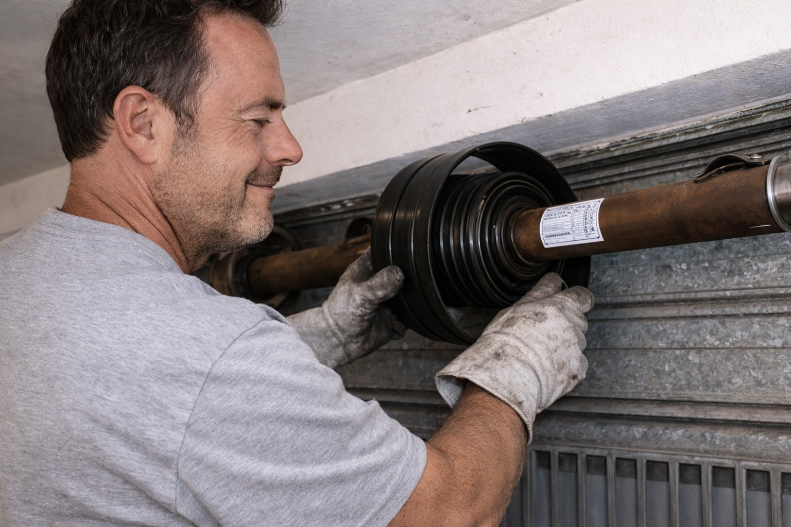
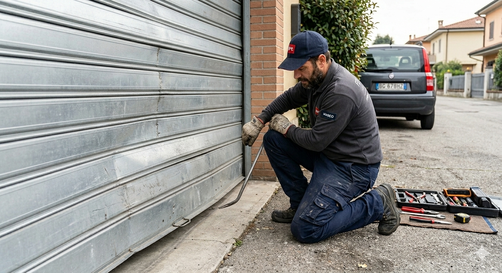

Servizi principali

Sostituzione molle
Ripristino del corretto funzionamento di serrande con molle usurate o rotte.

Motorizzazione
Installazione e riparazione motori per serrande manuali ed elettriche.

Serrande negozi
Assistenza per serrande di attività commerciali e contesti industriali.